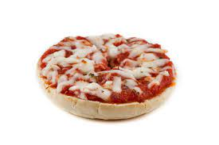

Pizza Bagel

A bagel with pizza toppings.
This is a great weekday dinner, and sure to satisfy any age. As a low-stress, kid-friendly meal, this can easily fit into your schedule.
With just a few ingredients and no preparation required, this is a great recipe to have for those busy days when you just need a quick meal.
Ingredients
- Plain bagels
- Shredded mozzarella cheese
- Pepperoni
- Jarred pizza sauce
- Any other desired toppings
- Cut bagels in half horizontally.
- Spread a layer of pizza sauce
- Sprinkle cheese on top.
- Add pepperoni and any other desired toppings.
- Bake in oven or toaster oven at 350 degrees fahrenheit, until cheese is melted.